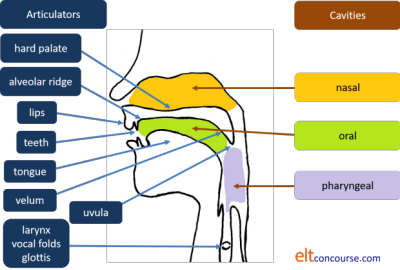

An exemplified grammar, lexis and phonology glossary for English Language Teachers
Define your terms |
This is one of several glossaries on the site.
For the full list, use this link:
Glossaries
Index.
In 1586, William Bullokar published A Brief Grammar of
English and since then innumerable other grammars have appeared
and continue to appear. The following does not add
substantially (or at all) to an area of serious study that has been
in train for 450-odd years.
It is also not intended as a replacement for a dictionary of lexical
and phonological terms.
What it does claim to do is allow you to investigate further by
following the links to the right of the definitions and examples.
The following is available for private use as a PDF document but it
comes, of course, with none of the interactivity and links to
guides. It will also not be as frequently updated.
Click here to get the document.
If you are looking for something in particular, you can use Ctrl + F to search this page or use this menu. The Back button on your browser will return you to this menu.
| A | B | C | D | E | F | G | H | I | J | K | L | M | N | O | P | Q | R | S | T | U | V | W | YZ |
All links open in a new tab.
| Examples | Guide links | ||
| A | |||
| a-adjective | A special kind of
adjective beginning with a-.
These adjectives are nearly always used
predicatively. (These adjectives may be used attributively when modified.) |
The dog is asleep NOT *The asleep dog Others in this group include: ablaze, afraid, alive, alone, awake, aware (The wide awake children) |
Adjectives |
| ablative | An
inflexion
which denotes that the
case use is to express by, with or
from Few modern languages use an ablative case although it exists in, e.g., Turkish, Azerbaijani, Uzbek, Kazakh, Kyrgyz and Hungarian. |
In Latin, fields translates
as agri but from the fields as ex agrīs |
Case |
| ablaut | A vowel change denoting
a grammatical function. This was also called gradation and is known as vowel mutation. |
The verb sing changes to sang in the past tense | Ablaut reduplicationLexical verbs |
| absolute tense | A tense which can be understood without reference to another time | She left | Time, tense and aspect |
| abstract noun | A noun referring to an intangible concept.
These nouns are often mass nouns. Compare concrete noun. Many do not consider the distinction between concrete and abstract nouns is valid. |
happiness, economics, love, embarrassment etc. | Nouns |
| accent | a) a mark above or below a letter to show its pronunciation. Such marks are also called diacritics. They are used in English on words imported from other languages. | in naïve, façade or café | Spelling |
| b) the place in a word where the
heaviest stress falls. This is better referred to as word stress. |
export (verb) and export (noun) | Word stress | |
| c) a particular way of pronouncing a language in a geographical area or social class or the influence of a first language in the pronunciation of a second. | A
Texan accent An upper-class accent An Italian accent |
VarietySociolinguistics | |
| accidence | Changes to the form of a word which
show grammatical function. Also used to describe the part of grammar referring to morphological changes. See also ablaut. |
smoke → smokes happy → happiness |
Morphology |
| accusative | A case referring to the direct object of a verb. | She told him | Case |
| acronym | A word made of the initial letters
of a phrase which are pronounced as one word. See initialism. |
NATO | Word formation |
| active voice | A verbal structure in which the
subject is the person or thing which performs the action or
is in the state. Compare passive voice. |
John broke the window The window was filthy |
Passive |
| adjective adjective phrase |
A word or phrase which modifies a noun phrase. They can be attributive or predicative. |
The large dog Mary was tired The children were well fed and happy She had an interesting, old book with her |
Adjectives |
| adjunct | An omissible
verb-phrase modifying element in
an expression. Adjuncts are integral to the clause in
which they occur. By some definitions, adjuncts may also modify noun phrases (as adnominals), adjective phrases (as adadjectivals) and adverb phrases (as adadverbials). |
She ran to the door They fell awkwardly The house on the corner (adnominal) The house was horribly untidy (adadjectival) He spoke quite movingly (adadverbial) |
Adverbials |
| adposition | A general term for connective items: see preposition and postposition. | ||
| adverb | A word which modifies a verb, an adjective, another adverb or a verb phrase. |
She walked quickly The book was very expensive He drove idiotically fast He had usually driven to work |
Adverbs |
| adverb of degree | An adverb telling you to what
extent. These are sometimes called adverbs of extent. |
I really enjoyed the book | |
| adverb of frequency | A subcategory of
adverbs of time,
expressing how often. There are two sorts: indefinite frequency and definite frequency with different associated grammatical structures. |
He usually goes home at 6
(indefinite frequency) She delivers the papers daily (definite frequency) |
|
| adverb of manner | An adverb expressing the way something happens. | It quickly became dark | |
| adverb of place | An adverb expressing where or in what direction an action happens or state exists. |
I came inside She was sitting there |
|
| adverb of time | An adverb expressing when something happens or a state exists. |
She left
then They stayed late |
|
| adverb phrase | A group of words doing the job of an adverb. | They walked home slowly and sadly | |
| adverbial | Any word, phrase or clause which modifies a verb phrase. |
He went
into town (prepositional-phrase
adverbial (adjunct) of place) I came to see if I can help (non-finite clause adverbial of purpose) I left when the rain started (finite clause adverbial of time) Honestly, I don’t know (adverb (disjunct)) Moreover, I don't think anyone knows (adverb (conjunct)) |
Adverbials |
| affect | The emotional meaning of an utterance, often signalled by intonation. | You cannot be serious!↑ | Intonation |
| affirmative | A sentence or clause which is not negated. | I am waiting for the rain | Sentences |
| affix | A morpheme attached to another word to make a more complex form. | incompleteness | Word formation |
| affricate affricative (n. and adj.) |
A consonant sound
involving the closure of the vocal tract and its slow
release. |
/tʃ/ in church | Consonants |
| agent agentive (adj.) |
In
passive clauses, the causer or doer
of the action. Agents are often linked with the preposition by. See patient. |
The
window was broken by them I had the work done by the garage |
Passive |
| agent noun | A noun derived from a
verb which denotes the person or thing that does the action
denoted by the verb. The usual way they are formed is with the -(o)r or -(e)r suffixes although -(o)r is no longer productive of new agent nouns. |
editor, doctor, vendor, purchaser, buyer, collector | Word formation |
| agreement | See concord. | ||
| alethic modality | Modality concerned with expressing universal truths. | A square must have four equal sides | Modality map |
| allograph | An alternative way of representing a letter. | The letter 'g' can be written as that or as 'ɡ' | Types of languages |
| allomorph | An alternative form of a morpheme. | The past-tense ending in English can be -d, -ed or -t | Word formation |
| allophone | A non-phonemic difference in the pronunciation of a sound. | /kʰ/ vs. /k/ | Pronunciation overview |
| alveolar | A consonant formed when the tongue is pressed against the alveolar ridge (behind the top teeth). | /t/, /d/ (tongue tip) /s/, /z/ (tongue blade) |
Consonants |
| ambiguity | Having the potential of more than one interpretation. | Where's the bank? (lexical ambiguity) She hit the man with the stick (structural ambiguity) |
Ambiguity |
| ambitransitive verb | A verb which may or may
not take an object (be either transitive or intransitive). Such verbs may retain the same meaning, change meaning or be associated with different forms of subjects in the two roles. |
I read his
letter I read for an hour The glass broke I broke the glass He ran fast He ran the business |
Types of verb |
| anaphora anaphoric (adj.) |
With reference back to an earlier
item. Compare cataphora. |
When the rain finally came it was heavy | Cohesion |
| antecedent | An item to which a later item
refers. Strictly, the term antecedent refers only to the noun phrase to which a relative pronoun refers. In other cases, pronouns refer to referents. See referent. |
That's the man whom I asked | Relative pronoun clauses |
| anticipatory | The grammatical subject of a clause which anticipates the notional subject. | In It is nice to be here The pronoun it anticipates the real complement of the verb be. It could be rephrased as To be here is nice. |
It and there |
| antonym | a) A gradable word of opposite meaning. b) A converse word (also relational antonymy) c) A complementary opposite (also binary antonymy) |
a) good vs. bad b) mother vs. daughter c) open vs. shut |
Lexical relationships |
| aphesis / apheresis | The omission of an unstressed sound at the beginning of a word. | until → till around → round |
Word formation |
| apocope | The omission of a section from the end of a word. | photograph → photo | |
| apposition | When two elements have the same meaning and grammatical status, they are in apposition. | My brother, the manager, will help | ConcordPhrases |
| approximant | A sound produced when
two organs of speech are close together but without audible
friction. See also fricative. |
the /j/ in yet | Consonants |
| argot | A term less disparagingly used than jargon to refer to the use of terms specific to a particular group or class. | Teenager English | Variety |
| article | A class of determiners which modify noun phrases for number or reference. There are three in English: a(n) (the indefinite article), the (the definite article) and Ø, the zero article. | She bought a house on the hill with Ø money from her father | Articles |
| articulator | An organ or mouth part
involved in the production of sounds. The diagram is:  |
Pronunciation overview | |
| aspect | How an event or action is perceived
relative to time (as opposed to in time). There is not always a one-to-one relationship between aspect and form. See tense. |
He lives in London (continuous aspect) He was working (progressive aspect) He has worked (perfect aspect) He used to work (habitual (past) aspect) |
Aspect |
| aspiration | The addition of an audible breath to a consonant sound. | /kʰ/ not /k/ at the beginning of cash | Consonants |
| assemblage noun | A special type of collective noun
for particular animals. See collective noun. |
a pod of whales | Nouns |
| assertive forms | Pronouns, adverbials
and determiners which are conventionally used in positive
sentences. Compare non-assertive. |
I want some time to myself I have already finished Let me have a few |
Assertive and non-assertive |
| assimilation | The effect of one sound on the production of another so that they become more alike. | ten + pin pronounced as /tem.pɪn/ not /ten.pɪn/ | Pronunciation overview |
| assonance | The phenomenon of two words sharing a common vowel sound but with different consonants. | hurly-burly | Idiomaticity |
| assumptive modality | A form of epistemic modality expressing the speaker's view of the truth based on previous experience. |
She'll be at work at
this time of the morning Don't call now. They'll be having dinner |
Types of modality |
| asterisked form | The conventional way to denote a
malformed expression. Also called a starred form. |
*He goed last week | Used in most guides |
| asyndetic | Omission of a conjunction. The opposite is the inclusion of the conjunction and is called syndetic coordination. |
Tired, frustrated, he walked
out They went home poorer but wiser |
Conjunction |
| atelic | See telicity. | ||
| attitudinal disjunct | See disjunct. | ||
| attributive | This describes an adjective which comes directly before or after the noun and is not linked to it by a copular verb. See predicative. |
The green house The people responsible |
Adjectives |
| autoantonym | A word which has two
opposite meanings. Also called contranym / contronym. |
cleave can mean split or stick together with | Lexical relationships |
| autonomous language | An independent language or dialect defined by notions of non-mutual comprehensibility with other languages dialects or by political, ethnic or cultural divisions. |
British and American English Japanese and Italian |
Sociolinguistics |
| autonym | A word used by a group
of people to describe themselves. Compare exonym. |
Brit is often used by British and other people to describe people from Britain. | Lexical relationships |
| auxiliary verb | a) Primary auxiliary verb: A verb which has no meaning alone but works with main verbs to express aspect or voice. |
I have finished He was cycling They were sold I had it repaired |
Primary auxiliary verbsAspect PassiveCausative |
| b) Modal auxiliary verb: A verb which has no meaning alone but works with main verbs to express the speaker's perception of truth, necessity, obligation etc. |
We should leave I must go home now She needn't have troubled |
Modal auxiliary verbsModality map | |
| B | |||
| back | Describing sounds made
at the back of the mouth. Compare front and central. |
/h/ and /ɒ/ | Vowels |
| back formation | The formation of a word by the removal of an assumed but non-existent affix from another. | edit from editor | Word formation |
| base form | The form of a word from
which other forms are derived. Base forms of adjectives and adverbs may be referred to as positive forms. See stem. |
speak,
write,
open,
decide
etc. long (base form) and longer (derived form) decide (base form) and decision (derived form) |
Finite vs. non-finiteWord formation |
| bilabial | A consonant made with both lips. | /m/ and /p/ | Consonants |
| bilingualism | The ability to speak more two languages with native-like ability. Multilingualism refers to the ability to speak two or more languages. | Switching between English (at work) and Spanish (at home) in the USA. | Variety |
| binding | When clauses are
unequal, they are connected by binding. (Compare linking) |
The room was a mess because I'd been too busy to clear up | Complex sentences |
| blend / blending | A word formed by combining two other
words. Sometimes called a portmanteau word. |
smog (from smoke and fog) | Word formation |
| boulemic modality | A form of deontic modality referring to that which is necessary given a person's wants and desires. | I must go now
and get something to eat You don't have to stay if you have work to do |
Types of modality |
| bound base bound root |
A base form subject to affixation but which is no longer an independent element in the language. | tangible edible |
Word formation |
| bound form bound morpheme |
A morpheme which cannot stand alone but always appears in combination with a base form. | denationalise | |
| C | |||
| calque | A word or expression borrowed from another language but translated into the receiving language. | lightning war (from Blitzkrieg) | Word formation |
| canonical word order | The usual unmarked
ordering of items in a language. Languages vary. See also word order. |
English is Subject-Verb-Object, Adjective-Noun, Determiner-Noun etc. | Word order |
| cardinal vowels and English vowels |
Cardinal vowels
are a set of
reference sounds to identify vowels in
any
language. The following are not cardinal vowels, they are the vowels in English.  |
Vowels | |
| case | The form of nouns, pronouns and
adjectives which show their relationship to other items. English has a very limited case structure grammar but other languages are more sophisticated and complex in this area. |
She wants to go (subject or
nominative case) I want to talk to them (object or accusative case) That is mine (possessive or genitive case) |
Genitive |
| cataphora cataphoric (adj.) |
With reference to a following item. Compare anaphora. |
When it was finished, I admired the work he had done | Cohesion |
| catenation catenative (adj.) |
The phenomenon of verbs occurring in a chain. | She came to help to organise the room | Catenative verbs |
| causative | A form of passive sentence in which the producer of the language is not responsible for the action performed. | I was made to
wait I had / got the car repaired |
Causative |
| cavity | A chamber in the oral
tract employed to make sounds. See under articulators or vocal tract for the diagram. |
nasal oral pharyngeal |
Pronunciation overview |
| central | a) Describing sounds
made in the centre of the mouth. Compare Back and Front. |
/ɜː/ and /tʃ/ | |
| b) Referring to items which exhibit all the defining characteristics of their class. | beautiful
is a central adjective may is a central modal auxiliary verb |
AdjectivesModal auxiliary verbs | |
| circumstance | In functional grammar
any expression which signals extent, location (in time and
place), contingency, cause, accompaniment, matter, role,
manner or angle. Compare adverbial. |
for a week in the park for a change by car quietly etc. |
Circumstances |
| classifier | Also known as a noun
adjunct, a classifier determines the nature of a noun rather
than describing it although it is often seen as adjectival.
Classifiers may not usually be modified with adverbs. (Compare epithet) |
It's a brick
wall She's an English language teacher |
Classifiers and partitives |
| clause | A group of words containing a verb form. The verb may be finite or non-finite. | She came because she wanted to help
(finite clause) I came hoping to help (non-finite clause) |
Clause structures |
| clear /l/ | Describing the front
consonant sound at the beginning of the word leak. Compare dark /l/ ([ɫ]). |
The first sound in lull (/lʌl/) | Consonants |
| cleft | A type of sentence into which, for emphasis, a second verb phrase is inserted. | It was to the restaurant she took her mother | Clefts |
| clipping | A process of word formation involving the abbreviation of a longer word. | perambulator → pram | Word formation |
| clitic (n.) cliticised (adj.) |
A form which cannot
stand alone. In some analyses many function words such as the, an, by etc. are referred to as clitics (but not on this site). |
’m, n't and ’s are clitic forms in the cliticised words I'm, don't and she's | |
| close vowel | A vowel produced with the tongue in the highest position. | /i/ and /u/ | Vowels |
| closed-system items closed-class items |
These are word classes to which it is very rare to make additions and which can, therefore, in theory, be exhaustively listed. | prepositions, determiners, pronouns, conjunctions | Word class map |
| cluster | A series of consonants. | /kr/ and /sps/ in crisps | Consonants |
| coalescence | The fusing of sounds. | would you pronounced as /wʊdʒu/ | Connected speech |
| coda | a) Consonants following the nucleus of a syllable (which is preceded by the onset). | /p/ in top | Syllables |
| b) The final piece of a text which sums up or presents the writer / speaker's view etc. | So, in the end, it came out alright | Genre | |
| code switching | Changing language, dialect, style, register or accent to suit the social or linguistic setting | Changing to a formal style and older dialect when in church and using completely different style or dialect among family members. | |
| coherence | Logical or functional connectedness. Compare cohesion. | Where's she gone? She needed to get to the shop |
Theme-Rheme |
| cohesion | The use of grammatical or lexical
connectors to maintain connectedness in language.
Compare coherence. Items which contribute to or structure cohesion are called cohesive devices often mistakenly referred to as discourse markers. |
Where's Mary? She went to the shops |
Cohesion |
| coinage | See neologism. | ||
| collective noun | A noun which refers to a group of things or people. This expression is sometimes used also for assemblage nouns. Collective nouns are often confused with partitives which have an opposite function. |
The army is helping The jury are considering the verdict A flock of sheep |
Nouns |
| colligation | The tendency of some words to enter into characteristic grammatical relationships. |
I hid behind the door not *I concealed behind the door |
Colligation |
| collocation | The tendency of words to co-occur. |
He ran a risk She took a risk *She made a risk |
Collocation |
| combining form | A form resembling an affix but which adds to rather than altering the meaning or changing word class. | geopolitical | Word formation |
| commissive modality | A form of deontic modality referring to an obligation placed by the speaker on the speaker. |
I will pay you back, I promise I have to thank you |
Modality map |
| comment clause | A type of disjunct. | The answer, I must say, is not clear | Disjuncts |
| common noun | A type of noun contrasted with a proper noun to refer to objects or concepts. | chair, happiness, people etc. | Nouns |
| comparative | The form which is used to show a
greater or lesser degree of a quality. There are two sorts:
inflected
and periphrastic. Comparatives may be made with adjectives or adverbs but most adverbs take the periphrastic forms. |
A bigger house (inflected comparative) A more beautiful cat (periphrastic comparative) |
Adjectives |
| complement | A word or phrase which tells us something about the
subject or
object of
a clause. Complements are often linked with a copular verb. Complements also refer to any item which completes the meaning of another. |
They elected him chairman (referring
to
the object, him) She is happy (referring to the subject, she) John is the manager (referring to the subject, John) He called me stupid (referring to the object, me) That is mine (referring to the subject, that) The house is over the hill (referring to the subject, the house) She is keen on opera |
Verbs and clausesCopular verbs and complements |
| complex preposition | A preposition consisting of more than one word. | because of in spite of |
Prepositional phrases |
| complex sentence | A sentence consisting of at least one main and one subordinate clause. | She came although she was tired | Sentences |
| compound | A word or phrase formed by combining the meanings of words which represents a single sense. | door + man = doorman | Compounding |
| compound sentence | A sentence consisting of two coordinated clauses. | I came but you were out | Sentences |
| compound-complex sentence | A sentence consisting of both subordinated and coordinated clauses. | I came to see you but you were out so I left this note | |
| compositionality | See non-compositionality. | ||
| concession | A function of subordination which concedes a point. | She went although she didn't really want to | Condition and concession |
| concord | A grammatical relationship whereby
one form requires a change in another. In English, this usually applies to verbs and their subjects. In other languages, it may apply to, e.g., gender marking on adjectives or case marking on nouns. In the latter cases it is often called agreement. Concord may be ungrammatical in English because of notion (viewing a singular entity as plural or vice versa) or proximity (a plural or singular form being close to the verb). |
It breaks easily The army is helping The jury are divided None of his friends are here |
Concord |
| concrete noun | Nouns which refer to physical
entities. They may be mass or count nouns. Many do not consider the distinction between concrete and abstract nouns is valid. |
book, wind, mountain, paper etc. | Nouns |
| conditional | A clause whose truth is contingent on the truth of another clause. |
Give me the money and I’ll buy it for you Come if you can spare the time Should you get lost, call me |
Condition and concession |
| conditional sentence | A sentence which consists of two clauses at least, one of which expresses the condition (the protasis) and contains the conditional conjunction or other marker of condition and one which expresses the consequence of the fulfilment of the condition (the apodosis). |
If you come to the party
(protasis), you'll be able to meet his sister (apodosis) |
|
| conjugate | To give the inflexions of a verb showing voice, mood, tense, number and person. | She arrived yesterday and Steve was happy to see her | Verbs index |
| conjunct | An adverbial which performs a connective function. | It's raining and cold. However, I'll take the dogs out | Conjuncts |
| conjunction | A word to join two ideas (clauses, verbs, nouns etc.). | She went home because she felt ill
(subordinating) We ate bread and butter (coordinating) They not only cleaned but polished the car (correlating) |
Conjunction |
| connotation | An additional meaning
of a word (usually negative or positive) (Compare denotation) |
doctor (positive or neutral) vs. quack (negative) | Semantics |
| consonant | A sound made by wholly or partially closing the vocal tract. | /p/, /b/, /f/, /t/, /h/ etc. | Consonants |
| constituent | A unit which forms part of a larger language unit. | The pub over the hill, by the river, where we met | Constituents |
| content disjunct | See disjunct. | ||
| content word | A word which has meaning when standing alone (compare
function/al word). These are sometimes
called lexical words. Content words are members of open classes: nouns, verbs, adjectives, adverbs (in English). |
house, bring, pretty, usually, French etc. | Word class essentials |
| continuant | A sound made by semi-closing the vocal tract. | /f/ in fox | Consonants |
| continuous | An aspect
of a verb tense to describe something on-going or happening
in the background. There is a technical difference between continuous and progressive aspects. |
I was sleeping while
she was at work She thinks I love her |
Time, tense and aspect |
| contour | The sequence of pitch and other factors in an utterance. | Depicted as a wavy line or in other ways | Intonation |
| contraction | The omission of a letter or letters in a word or phrase, usually denoted with an apostrophe. | can't, o'clock, Mary'll | Pronunciation index |
| contrastive stress | A special stress to
mark an item as emphatic. Also known as special stress. |
She went with her mother | Sentence stress |
| contronym | A word which has two
opposite meanings. Also called an auto-antonym. |
cleave (cut) vs. cleave (stick together) | Lexical relationships |
| conversational maxims | The assumed rules for maintaining coherent and cooperative communication. | maintain relevance, do not over inform etc. | Pragmatics |
| converseness | The relation between antonyms in which the existence of one logically implies the existence of the other. | brother / sister | Lexical relationships |
| conversion | Word formation consisting only of a change in word class. | clean (adj.) clean (verb) | Word formation |
| coordination | The linking of two
potentially independent clauses. The conjunction is a coordinator. |
I rang but there was no answer | Coordination |
| copular verb copula (Pl. copulae or copulas) |
A verb which joins together two nouns, a noun and an adjective, a noun and its complement or a noun and a prepositional phrase. These are sometimes called linking verbs. | She became a teacher They grew tall She was in the garden |
Copular verbs and complements |
| correlative conjunction | Conjunctions consisting of two connected words. | Either we'll take the car or he'll give us a lift | Conjunction |
| count noun (Adj. countable) |
A noun which can have a plural and
take a plural verb. These are distinguished from mass nouns. |
The cats are in the house | Nouns |
| creole | A language usually
developed a from pidgin
and having all the characteristics of a full, autonomous
language including an elaborate lexicon, full grammar and
standard pronunciation. What makes creoles distinct languages is that they are often acquired by children as their first (and sometimes only) native language. |
Cape Verdean Creole Jamaican Patois Rabaul Creole German |
Types of languages |
| D | |||
| dark /l/ ([ɫ]) | Describing the back
consonant sound at the end of full. Compare clear /l/. |
The last sound in lull (/lʌl/ or [lʌɫ]) | Consonants |
| dangling participle | The often disparaged use of a
participle making it unclear what the referent is. This is also called a misrelated participle. |
While getting on the bus my wallet fell out of my pocket | Dangling participles |
| dative | The case usually denoting the indirect object or some forms of prepositional relationships. | He sent me a card | Case |
| dative shifting | The act of moving the indirect object in a clause and linking it with a preposition. | She read the children a story shifting to She read a story to the children | Verb and clause types |
| declarative | Expressing a statement. | The rain started The rain didn't stop |
Mood |
| declension (Vb. decline) |
The variations in morphology of a pronoun, noun or adjective depending on its grammatical function. | She gave the letter to her | Personal pronouns |
| deductive / evidential modality | A form of epistemic modality referring to the speaker's view as influenced by evidence. | It might rain
later I think it's going to be a difficult job |
Modality index |
| defective | Describing words which do not follow all the rules of their class. | must is a verb which has no past
form. awake is an adjective which cannot be used attributively. |
Modality indexAdjectives |
| defining | Of relative pronoun clauses, those
which define rather than simply add information. These
are sometimes called restrictive clauses. They are contrasted with non-defining clauses. |
The house which is over
the road has been sold (defining) vs. The house, which is over the road, has been sold (non-defining) |
Relative pronoun clauses |
| deixis (n.) deictic (adj.) |
Items which allow the language user
to refer to not me, not here and not now. Deixis may be subdivided into personal, spatial, temporal, social and textual deixis. |
You went there the previous day | Deixis |
| delexicalised verb | A verb which takes its meaning from the noun with which it collocates. | make the beds pay a compliment take a shower |
Collocation |
| demonstrative | A class of determiner telling us
what noun we are talking about. The same words can also be demonstrative pronouns. |
This house That garden Those cars These people |
Determiners |
| demonym |
|
Dutch refers to people from The Netherlands | Adjectives |
| denotation | A word's general meaning rather than
any meaning the speaker or hearer imputes. (Compare connotation) |
A coin is a piece of metal money | Semantics |
| dental | A consonant sound produced with the tongue in contact with the teeth. | The last sound in teeth (/tiːθ/). | Consonants |
| deontic modality | Modality concerned with expressing duty, permissibility or obligation (or their lack). | You must be
more respectful to your grandfather You don't have to be rude |
Modality map |
| dependent clause | A subordinate clause which depends for its full meaning on another, main, clause. | She had enough money although she wasn’t rich | Coordination and subordination |
| derivation | The formation of a word from another by a number of processes including conversion, affixation and suffixation. | housing is derived from the word house | Word formation |
| determiner | A word which comes before a noun to say what we know about it. | articles: I want to buy a house in
the town demonstratives: I want to buy that house interrogatives: Which house do you want to buy? possessives: I want to buy his house quantifiers: I want to buy two houses |
Determiners |
| devoiced | Describing a sound which is produced with less voicing than is usual. | A final /d/ may be devoiced to /t/
in He had it (/hi.hæt.ɪt/) |
Consonants |
| diacritic | See accent. | ||
| diachronic variation | Changes occurring
across time in a language. Compare synchronic variation. |
The loss of inflexions between Old and Middle English | The roots of English |
| dialect | A social or regional variety of a
language identifiable by both accent and lexical or
grammatical forms. Other terms used to describe this are ethnolect, geolect and regiolect. |
Southern British English | Variety |
| diglossia | Two standard varieties of a language existing together. | Modern Standard Arabic alongside
other varieties of Arabic Literary Kathourevousa versus spoken Demotic Greek |
Types of languages |
| digraph | A combination of two letters representing a single sound. | th and ng in thing (/θɪŋ/) | Consonants |
| diminutive | An affix meaning small. Some carry connotations of attractiveness. | leaflet doggie |
Word formation |
| diphthong | A vowel in which there is a clear change in quality during the syllable. | Vowels in road, shine etc. (/rəʊd/, /ʃaɪn/) | Vowels |
| directive | Language used to get someone else to do something. | Open the window | Suasion |
| direct object | The entity on which the verb acts. Compare indirect object. |
I bought the house | Case |
| direct speech | The actual words spoken. | He said, “Hello, Mary.” | Indirect speech |
| directive modality | See imperative modality. | ||
| discontinuity | The splitting of an item by others. | Put your coat on | Multi-word verbs |
| discourse | A continuous stretch of spoken or written language longer than a sentence. | Any longer text. | Discourse index |
| discourse marker | Properly, this refers
to the language which speakers use to manage interactions,
conversations and other spoken events such as lectures and
formal discussions. It is now very loosely used to refer to any item which contributes to coherence and cohesion. |
Feel free to interrupt
with any questions. Let me respond by saying ... Do you have a view? Firstly, ... |
|
| disjunct | An adverbial which
expresses the speaker / writer’s view of the truth of a
proposition (attitudinal or content disjuncts) or how it should be understood
(style disjuncts). Also called sentence adverbials or stance adverbials. |
On the face of it,
it’s too expensive (attitude or content, referring to
value of the proposition) Frankly, I don’t care (style, referring to the speaker) |
Disjuncts |
| distributive pronoun distributive determiner |
a pronoun or determiner which signals the way in which something is apportioned. | I gave everyone
a drink (pronoun) She gave each a new label (pronoun) Each child got a prize (determiner) |
Indefinite pronounsDeterminers |
| ditransitive | Describing a verb which can take both a direct and an indirect object. | He passed me the book | Verb and clause types |
| dual | A number in many languages which indicates two of something. The form is vestigial in Modern English. | Both boys are here | Determiners |
| durative | a) An aspectual form in many languages
which emphasises the length of an event or state. In
English the sense is usually achieved with a progressive
form and an adverbial. b) A verb whose meaning implies a long-lasting event. When used in the progressive aspect these verbs denote duration rather than iteration. (Compare instantaneous verb) |
a) She is still complaining b) read, study, stay etc. |
Aspect |
| dynamic | a) a use of the verb, distinguished from
stative. |
John is being silly She is thinking Kirstin is swimming Mary is paying attention |
Time, tense and aspect |
| b) a type of passive clause. This is distinguished from a stative passive. |
The garden gets invaded by cats The garden was cleared |
The passive voice | |
| c) a use of an adjective to express the fact that something is under the control of a person. It is contrasted with a stative adjective referring to an unalterable characteristic. | Be more patient (dynamic
use) *Don't be tall (stative use, imperative disallowed) |
Adjectives | |
| dynamic modality | Modality expressing
ability or willingness. Dynamic modality is sometimes referred to as personal modality because it frequently applies to the speaker / writer. |
I'll get that! I can't see the game from here |
Modality map |
| E | |||
| ecolect | A rare term which describes more or less the same phenomenon as an idiolect but is a variety used solelywithin a family or household. | We are having Aunt Mabel's Potato Fritters | Variety |
| elision (Vb. elide) |
The omission of sounds in connected speech. | Are you comfortable? as: /ə.ju.ˈkʌmf.təb.l̩/ |
Connected speech |
| ellipsis (Vb. ellipt) |
The omission of a word or words. | Can you come? Yes, I can. |
Substitution and ellipsis |
| embedding | Inserting one clause or phrase
within another. The phenomenon is akin to recursiveness. |
The woman with the red hair is coming over | Clauses |
| empty verb | See delexicalised verb. | ||
| end focus | The tendency in English to place the important or new information towards the end of an utterance. | Yesterday he went to
London vs. He went to London yesterday |
Postponement and extrapositioning |
| end weight | The tendency in English to place heavier (i.e., longer and more complex) items towards the end of the utterance. | He worked in London
during the time he was trying to save up to open his own
business vs. During the time he was trying to save up to open his own business, he worked in London |
|
| endophoric | Referring to elements
within the text which have occurred or occur later (anaphoric
and cataphoric
reference, respectively). |
When John bought it, he was surprised at the expense of the part | Cohesion |
| epicene | Descriptive of a word which is gender neutral. | teacher can apply equally well to a male or female teacher but bridegroom is marked as male | Gender |
| epistemic modality | Modality concerned with expressing a view of the truth or likelihood of a proposition. | That must be
the six o'clock train She can't have been at the meeting |
Modality map |
| epithet | A descriptive rather
than classifying adjective (Compare classifier) |
That's a good idea | Adjectives |
| eponym | A word derived from a person's name. See also toponym. |
wellington
boots boycotting the company |
Word formation |
| ethnolect | A dialect used by an identifiable ethnic group. | New York Jewish | Variety |
| evidential modality | See deductive modality. | ||
| exclamation | A phrase or clause expressing anger,
despair, surprise etc. This is also sometimes called an interjection. |
What???!!! How silly of me! |
Word class essentials |
| existential | Applied to the words it and there to express that they emphasise the existence of something. | There is a car
outside It is your brother on the phone |
Existential it and there |
| exonym | A name by which one group of people refers to another describe a group of people but which is not used by that group to describe themselves. | gringo is sometimes used by Latin Americans to describe citizens of the USA. | Word formation |
| exophoric | Referring to items outside the text. | It's like that game you played when we were kids | Cohesion |
| exponent | The language used to
realise a communicative function. Also called realisation. |
Offer: Structure: Would you like a / some ... Lexis: cup of tea, cake, more etc. |
Communicative Language Teaching |
| extrapositioning | Moving an item to the beginning or the end to mark its significance or conform to end weight or end focus. | It's a shame that he couldn't come vs. That he couldn't come is a shame |
Postponement and extrapositioning |
| F | |||
| false cognate | A word in another language which looks and/or sounds similar but is unconnected in derivation (and, often, meaning). | okuru (Japanese = occur) and occur (English) | Cognates |
| false friend | A cognate word in another language derived from the same source but having a different meaning. | sensibel (German = sensitive) and sensible (English = rational) | |
| field | See semantic field. | ||
| field | The topic area in which a text is set and its goals, short and long term, which determine in part the language which is used. | business, personal communication, discussion essay, procedural instructions etc. | Functional grammar |
| filler | Any spoken hesitation device. | He's er, well, you know, difficult | Communicative strategies |
| finite | A form of a verb (or a clause) which is marked for
tense, number or person. It can stand alone as the
only verb or verb phrase in a clause. Finite forms may also be marked by a zero inflexion. Compare non-finite. |
John plays tennis Mary lost the game They have been to America They walk |
Finite vs. non-finite |
| fixedness | The tendency for some idiomatic language to be unalterable. It is a variable phenomenon. | I ran to and fro all day | Idiomaticity |
| form | The appearance of a language item without consideration of its meaning, social use or communicative value. | The past of catch is caught, pronounced as /kɔːt/ | Pragmatics |
| fortis | Of sounds produced with
relatively greater force. Also unvoiced. Compare lenis. |
/f/ and /p/ vs. /v/ and /b/ etc. | Consonants |
| free variation | Descriptive of forms of the same item which are different but occur in the same dialect. | The pronunciation of often as /ˈɒf.n̩/ or /ˈɒf.tn̩/ | |
| fricative | A sound produced by
friction between two organs of pronunciation. See also approximant in which no friction is audible. |
/z/ in zoo | |
| front | Describing sounds made
at the front of the mouth. Compare back and central. |
/i/ and /t/ | Vowels |
| function | a) The communicative value of a language item, utterance or expression. | The imperative clause Have some more functions as an invitation not an order |
Pragmatics |
| b) The grammatical role played by a language element. | That he was allowed home surprised
me in which we have a clause functioning as the subject of the verb |
Phrases | |
| function words | Words which have no meaning when
standing alone but make the grammar work. The main classes
are prepositions, conjunctions, pronouns and determiners. These are sometimes called functors or grammatical words. |
at with it this |
Lexis index |
| G | |||
| gender | A way of classifying nouns by certain characteristics such as masculine, feminine, neuter, animate, inanimate, edible, inedible etc. which affects how the grammar of the language (especially inflexions) works. | le soleil (sun,
French, masculine gender) la lune (moon, French, feminine gender) die Sonne (sun, German, feminine gender) der Mond (moon, German, masculine gender) |
Gender |
| genitive | The possessive
case. The genitive does not only apply to possession; it can also apply to origin or description. |
The policy of the government My book The man's request |
Genitive |
| genre | An identifiable communicative function of a text which it shares with others of the same sort. | Recount, Exposition, Narrative etc. | Genre |
| geolect | A dialect characteristic of speakers from a geographically defined area. | Scots English | Variety |
| gerund | A non-finite
verb form which
functions as a noun formed from a verb with the suffix -ing. The form is the same as that of a present participle. It is sometimes referred to as a verbal noun but technically distinguishable: unlike verbal nouns, gerunds may be modified by adverbs but verbal nouns are more noun-like in being modifiable by adjectives and determiners. |
I gave up
smoking This -ing form may not normally be used with a determiner. |
Catenative verbs |
| glide | A transitional sound as
a vowel (usually) moves from one quality to another, often
forming a diphthong. Also a change in pitch level. |
/ɪə/ starts with the short vowel /ɪ/ and glides at the end
to the /ə/ sound duty pronounced as /ˈdjuː.ti/, gliding from /j/ to /uː/ |
Vowels |
| glottal glottal stop glottis |
A sound made at the
back of the throat. A sound made by closing and opening the back of the throat (glottis). Represented as /ʔ/. The part of the throat involved in the production of these sounds. See the diagram under vocal tract. |
The /h/ sound in house is a glottal consonant Pronouncing I got it as /ˈaɪ.ˈɡɒʔ.ɪʔ/ |
Consonants |
| glyph | A readable character in a writing system |
The character g may be written as G or g (These are alloglyphs of g) |
Spelling |
| goal | The entity affected by the action
encoded in a verb. Also called the patient or the recipient. |
John made the dinner The dinner was eaten with relish |
Functional grammar |
| gradation | See ablaut. | ||
| grapheme | Either: The smallest units of the writing system that represent a sound or: The smallest identifiable units of a writing system |
Either: sh is the grapheme representing the sound /ʃ/ or: s and h are two of the graphemes of the Latin alphabet used in English |
Spelling |
| H | |||
| habit habitual |
An aspect in English which refers to an event or state which exists or existed (semi-)permanently. | She used to be quite
helpful We tend to eat quite early She is driving to work these days She teaches in this school They would take offence easily |
Semi-modal auxiliary verbsTenses and aspects |
| hard palate | See palate. | ||
| head | The main and obligatory element in a phrase which indicates its grammatical function. | in the rain the brilliant new book |
Phrases |
| headedness | Referring to which
element of a combination determines the meaning in a
language. English is right headed (or head final) because the second, right-hand element determines the meaning. Other languages are left headed (or head initial). |
A wind mill is a kind of
mill not a kind of wind In French, a timbre-poste is a kind of timbre, not a kind of poste |
Compounding |
| heaviness | Referring to the length or complexity of a phrase or clause. Conventionally heavy elements are placed in English towards the end of a sentence. | He lost it while he was travelling on the bus from Spain to Russia with his friends | Postponement and extrapositioning |
| heterographs | words which have the same
pronunciations but different spellings. |
road / rode | Lexical relationships |
| heteronyms | a) words which have the same spelling
but a different pronunciation and different meanings b) words which refer to the same thing but are used in different dialect or speech communities |
lead
(go before) and lead (metal) export (verb) and export (noun) elevator (US) and lift (UK) |
|
| historical present | The use of the present tense to add
immediacy to an event set in the past. |
So, I'm waiting for the bus yesterday, when ... | Tenses and aspects |
| homographs | Words with the same spelling but different pronunciations and/or meanings. | bear
(animal) vs. bear (carry) wind (moving air) vs. wind (turn around something) |
Lexical relationships |
| homonyms | Words with the same spelling and pronunciation but different meanings. | rock (stone) vs. rock (sway from side to side) | |
| homophones | Words with different spellings but the same pronunciation and different meanings. | road vs. rowed | |
| hortative | Encouraging others. | Shall we get this done now? | Suasion |
| hypernym | The overarching term which includes the hyponyms. | vehicle includes car, bus, truck, motorcycle etc. | Lexical relationships |
| hyponyms | Any of the related terms included under a hypernym or superordinate. | car, bus, truck, motorcycle are the co-hyponyms of vehicle | |
| hypotaxis | The use of conjunctions to link
subordinate ideas. Compare parataxis. |
I ate breakfast before going out | Spoken discourse |
| I | |||
| ideogram ideograph ideographic (adj.) |
A symbol used to represent a complete idea. | 下 = down (Chinese) | Types of languages |
| idiolect | Language forms distinctive to an individual. | Variations in pronunciation of certain phonemes or the use of particular lexemes unique to an individual. | Variety |
| idiom | A phrase or clause used as a single concept which usually cannot be understood by understanding the words in it. | It’s turned up its toes (died / become useless) It's neither here nor there (unimportant) |
Idiomaticity |
| illocutionary force | The intended or perceived
communicative value of an utterance regardless of its form. See also Speech act. See also Propositional content. |
Is this your coat? (meaning or perceived meaning: Please move it so that I can sit down) |
Communicative Language Teaching |
| imperative | The form of the verb used to tell someone what to do or make offers. |
Go home Don’t tell her Have some more cake |
MoodSuasion |
| imperative / directive modality | A form of deontic modality referring to an obligation placed on the hearer. |
You should get some rest This has to be done before we can go |
Types of modality |
| impersonal | Having no specified agent. | It was snowing | Existential it and there |
| impersonal pronouns | See indefinite pronouns. | ||
| imprecative | a) a mood which is used
to express the hope that something does not happen (a
category of optative) a) a mood in some languages which expresses the hope that something bad happens c) a sentence containing a swear word intended to insult |
a) If only it wouldn't get so
cold b) May he lose c) You bloody aren't, you know |
Mood |
| inchoate | Descriptive of a verb which refers to the beginning of a state. Particularly applicable to pseudo-copular verbs. | It's getting dark | Copular verbs and complements |
| incompatibility | A feature of two or more language items which are mutually exclusive. | The paper is thin vs. The paper is thick | Lexical relationships |
| indefinite pronouns | Pronouns which do not refer to specific people. Also called impersonal pronouns. | Anyone can see
it's true Someone's at the door All is well |
Indefinite pronouns |
| independent clause | See main clause. | ||
| indexical | One of the functions of intonation, speaking or writing which is typical of a person or group of people | Sports commentary language. Paper sellers' intonation. Government reports. |
Intonation |
| indicative | Expressing objective statements. | I want some more | Mood |
| indirect object | When a verb has two objects, the
indirect object usually refers to a person who receives or
benefits. In English the indirect object usually precedes the direct object. Compare direct object. |
She bought me lunch I read the child a story |
Verb and clause types |
| indirect question | A question expressed in indirect speech or a polite embedded question with a similar structure. | She wanted to know where the gate
was Can you tell me where the gate is? |
Indirect questionsIndirect speech |
| indirect speech | Speech which is reported, not quoted
directly. See direct speech. |
He told me to come She said she felt ill |
Indirect speech |
| infinitive | A non-finite verb form often preceded by to. |
I came to help We should go |
Infinitives |
| inflexion (also
inflection) inflected (adj.) |
Changing the form of a word to show
grammatical function or other features such as
tense,
person, case and
aspect. In English, this is often achieved
by changes to the endings of words but can affect the
central vowels. Non-technically, inflexion may be applied to changes in tone, intonation and pitch in speech. |
He plays (with the -s inflexion to
show third person) She played (with the -ed inflexion to show past tense) They came (an inflexion on the central vowel ('o' to 'a') [ablaut]) The larger problem (inflecting the adjective to show comparative form) The houses were too expensive (with the -s inflexion to show a plural) |
Word formation |
| -ing form | A common way to refer to the form of the verb which ends -ing and can function grammatically in various ways often lying between verbal, adjectival and nominal functions. | I enjoy eating out We were eating at the time I object to you smoking while I'm eating It's a drilling machine |
Catenative verbsAdjectivesFinite and non-finite forms |
| initialism | A word made of the initial letters
of a phrase which are pronounced separately. See acronym. |
DVD | Word formation |
| instantaneous verb | A verb whose meaning
implies a non-durative or progressive event. Such
verbs, when used in the progressive aspect imply iteration
rather than an on-going event. (Compare durative) |
hit, break, snap etc. | Aspect |
| interjection | A word class signifying emotional
state. Also exclamation. |
Wow! Really! |
BackchannellingWord class essentials |
| intensifier | A language item which affects the force of another. | He is very
happy She is slightly depressed |
Adverbial intensifiersAdjective intensifiers |
| interaction | A language event
involving two or more people which has no definable goal and
exists to maintain social relationships. See also transaction. |
greetings, informal chats etc. | Speaking |
| interrogative | A question form. | Do you know her? Don't you like it? Which do you want? That's him, isn't it? That's him?! |
InterrogativesIndefinite pronouns |
| interrogative pronoun | A wh-word which functions as a pronoun for the object, clause or person in questions. | Who did you
see? What did he do? Where did she go? |
|
| intonation | The rise and fall in voice tone in spoken language. | That's right. (falling intonation) vs. That's right!? (rising intonation) | Intonation |
| intransitive | Describing a verb which cannot have a
direct object. |
They arrived She talked He fell We cannot have: *They arrived the hotel *She talked the people *He fell the river |
Verb and clause types |
| intrusion intrusive (adj.) |
Describing the insertion of a phoneme in connected speech. There are three in English: /j/, /w/ and /r/. | In law and order, an intrusive /r/ may be produced (/lɔːr.ənd.ˈɔː.də/) | Connected speech |
| inversion | Reversing the usual order of subject and verb (or using the do operator in simple tenses). | Never have I seen
such a mess Scarcely did I sit down when the phone rang. |
Word order index |
| iterative | An aspect which refers
to the repetition of an event. In English, this is usually signalled by the progressive form of an instantaneous verb. |
Someone has been stealing vegetables from my garden. | Aspect |
| J | |||
| jargon | The use of particular lexemes confined to certain areas of study, trade or interest. A defining characteristic is that such terms are obscure to those unversed in the area of concern. | Certain sports have associated jargon and most trades and professions develop jargon terms understood only by those within them such as legal jargon used by professional lawyers | Variety |
| judgemental / speculative modality | A form of epistemic modality referring to the speaker's judgement or understanding. | I think that's
too much That might not be enough |
Types of modality |
| juncture | An interruption of the normal transition between sounds which makes the pronunciation of two different phrases distinguishable. | ice cream vs. I scream | Connected speech |
| jussive modality |
A form of deontic modality referring to
an obligation placed on a third person. The jussive mood is also used in some languages with a distinctive verb form to express wishes about the actions of a third person. |
He really should
try to be more patient with the children Mary has to be the one to do it |
Types of modality |
| K | |||
| key | The tone or manner in which a speech act is produced. | ironic, sarcastic, bored, surprised sympathetic etc. | Intonation |
| The level of pitch combined with the intonation contour. | High key often expresses surprise or contrast. | ||
| kinesics | The study of paralinguistic features such as body movements and positions, gesture and facial expressions. | Turn taking | |
| L | |||
| labiodental | Sounds formed with the lips and teeth. | /f/ in fox | Consonants |
| larynx | The part of
the throat which contains the
vocal folds and is important in the
quality of sound production. See the diagram below under vocal tract. |
||
| lect | A term in sociolinguistics to describe varieties of language use. | sociolect, dialect, idiolect etc. | Variety |
| lenis | Referring to a less
strong articulation of a consonant. Compare fortis. |
/d/ and /b/ vs. /t/ and /p/ etc. | Consonants |
| lexeme | The technical term, often used
loosely for 'word' and referring to a single unit of
meaning. A lexeme is also defined as all the derived words under a dictionary head word (or lemma). |
the Houses of Parliament London re-establish don't go, going, gone |
Lexis index |
| lexical field | See semantic field. | ||
| lexical set | A group of words of the same class defined by topic or by syntactical characteristics. |
spade, hoe, rake, watering can
etc. frequently, seldom, often, rarely etc. |
Lexical relationships |
| lexical verb | Also called a content or main verb. A verb that is
not an auxiliary
and has meaning when standing alone. |
Go! She wept |
Verbs index |
| lexical word | A word which carries
significance rather than performing a grammatical function. Also content word. Compare function word. |
She went to the post office | Lexis index |
| limiter | An adverbial which functions to limit the range of the verb in some way. | I merely asked | Adverbials |
| linking | When clauses are of
equal weight and value they may be joined by linking
conjunctions. (Compare binding) |
He came home and went to bed | Complex sentences |
| linking verb | See copular verb. | ||
| lip rounding | Describing the extent to which the
lips are rounded in vowel production. The phenomenon
exists on a cline from fully rounded, through neutral to
fully stretched. Combined with notions of vowel height, tongue position and vowel length, vowels can be closely described. |
The sounds in foot (/fʊt/) and fit (/fɪt/) rounded and non-rounded respectively. | Vowels |
| loan word | A word borrowed from another language to fill a perceived gap (suppletion). | Angst from German into English | The roots of English |
| locative | A
case referring to the position of
something. In some languages, the locative is signalled by inflexions, in English by the use of adpositions. |
It's in the fridge in German becomes Es ist im Kühlschrank | Case |
| M | |||
| main clause | The clause which is independent and may stand alone. | I walked the dogs although it was snowing | Clauses |
| main verb | A verb which carries
lexical meaning and may be used on its own without another
verb. Also called a lexical verb. Compare auxiliary verb. |
I can't see the stage | Word class essentials |
| manner of articulation | The way in which a sound is produced. | voiced, unvoiced, with friction, plosive etc. | Overview of pronunciation |
| markedness | Any deviation from the simple and prototypical form to note or emphasise. | houses is marked as the
plural of house How often do you come? is unmarked whereas How rarely do you come? is a marked question |
Markedness |
| mass noun | A noun which can have no plural and
takes a singular verb. Compare count noun. |
The milk is in the fridge We ate pork Money is important in life Reading takes up a lot of my time |
Nouns |
| matrix clause | The clause in which another is embedded. | She saw that he wanted to ask a question | Clauses |
| meronym meronymy |
A constituent part of a larger entity which can be used to refer to the whole (see synecdoche). |
wheels as
a meronym of car handlebars, saddle, gears are also meronyms of bicycle even when not used to represent the whole |
Lexical relationships |
| metaphor | Figurative language use where a term is used usually associated with a different idea. | She exploded | Synonymy etc. |
| metaplasm | Spelling an item in the way it is sounded. | Going to as gonna | Four future forms |
| metonym metonymy |
A word used to refer to
an entity with which it is closely associated. The device of using a term closely associated with something actually to mean the thing. |
Number Ten as a metonym for
the British government Downing Street has issued a statement |
Synonymy etc. |
| minimal pair | A pair of words distinguished by a single change to a phoneme in the same place in the word. |
butter / putter cat / fat sing / sung for / far |
Pronunciation essentials |
| modality | Descriptive of language use which is concerned with the likelihood, permissibility or obligatory nature etc. of an event or state. |
I should be there
later It is possible she will be late I imagine it's going to be difficult |
Modality map |
| modal auxiliary verb | A verb which tells us how the speaker feels about the main verb in terms of possibility, obligation, ability etc. |
I should talk to her (deontic
modality) It may rain again (epistemic modality) I can't see (dynamic modality) That must be wrong (alethic modality) |
Modal auxiliary verbsModality map |
| mode | The kind of text which is being constructed. | oral, written, emailed, text message etc. | Functional grammar |
| modifier modification |
A linguistic item which
adds information to the head of a phrase. They can be pre-modifiers or post-modifiers. A modifier is any word or phrase which qualifies or limits another. (In functional grammar, the word modifier is used only for pre-modifiers and the term qualifier is used for post-modifying elements.) |
Dogs enjoy games has three unmodified elements but My mongrel dogs really enjoy games of fetch Has the same three elements modified old men (a pre-modifying adjective) men with experience (a post-modifying prepositional phrase) |
Modification overview |
| monophthong | A vowel which does not change during its pronunciation. Also pure vowel. | The /ɪ/ in hit (/hɪt/) | Vowels |
| mood | Attitudinal issues with verb phrases (wish, possibility, doubt, statement of fact etc.) | She is in
London (declarative) If only she were here (subjunctive) |
Mood |
| morpheme | The smallest meaningful unit of
language. There are two sorts. Bound morphemes always
occur with others but free morphemes can stand alone or form
part of a word. |
protesting
(one free (protest) and one bound (ing) morpheme) bookkeeper (two free (book and keep) and one bound (er) morpheme) |
Word formation |
| morphology | The study
of morphemes (above), their forms and functions vis-à-vis
word formation. This also refers to the morphemic system of a language as in the morphology of English. |
Morphology | |
| move | A term from discourse analysis to describe a unit which is often smaller than a complete utterance but has a communicative function. |
That's wrong, pass me the large one contains two moves: a) That's wrong (information) b) pass me the large one (imperative) |
Communicative Language Teaching |
| multal pronouns | Pronouns which refer to
more of the referent. (Compare paucal) |
He doesn't have many friends but she has more | Indefinite pronouns |
| multi-word verb | A verb consisting of more than one word. There are three sorts: phrasal, prepositional and phrasal-prepositional. | I give up (a phrasal verb) She complained about the service (a prepositional verb) She caught up with the class (a phrasal-prepositional verb) |
Multi-word verbs |
| multilingualism | Referring to the ability to speak two or more languages at native-speaker-like levels of fluency and accuracy. | Switching between English (at work) and Spanish (at home) in the USA. | Sociolinguistics |
| mutation | The change in an internal aspect of
a word which signals grammatical function. Also known as ablaut, vowel mutation, internal modification, stem modification or mutation, internal inflexion. |
sing - sang foot - feet |
MarkednessBinomialsLexical or main verbs |
| N | |||
| nasal | Describing sounds made by closing off the airflow and allowing the air to enter and flow out through the nasal cavity. | The sounds /n/, /m/ and /ŋ/ | Consonants |
| negative negation |
A sentence or verb form which refers to something not being or happening. | It didn't rain I refuse to come That's impossible She never comes on time |
Negation |
| negator | A word which make an utterance negative. | not, hardly, never, seldom, neither etc. | |
| neologism | The coining of a new word. Also coinage. |
chairperson, user-friendly | Word formation |
| node | The term in question when studying a word's collocational characteristics in a corpus. | ... when we were there we would usually go to ... | Collocation |
| nominalisation nominal (n.) |
Making an element of the language perform the function of a noun. | I want what you offered
John I'll take the blue |
Nominal clauses and phrasesNominal adjectives |
| nominative | The subject case. | She came home | Case |
| non-assertive forms | Pronouns, adverbials
and determiners which are conventionally used in negative
sentences, questions and expressions of doubt or
uncertainty. Compare assertive. |
I don't want anything
else I haven't yet finished I'm not sure there are any left Did anyone call? |
Assertive and non-assertive |
| nonce word | A lexeme invented for the occasion. | Pass me the picker-upper | Word formation |
| non-compositionality | Describing the variable quality of
idiomatic language, much of which cannot be understood by
understanding the elements that make it up. Also referred to as opacity. |
He's the black sheep of the family | Idiomaticity |
| non-defining | See defining. | ||
| non-finite | A form of the verb not marked for
tense, person or number. Compare finite. |
She wants to help I watched her enjoying the show Let me go |
Finite vs. non-finite |
| non-restrictive | See defining. | ||
| notation | Phonemic (broad) or phonetic (narrow) transcription of language sounds. | He came home as /hi.keɪm.həʊm/ |
Transcription |
| notion notional (adj.) |
A conceptual category smaller than a communicative function. | weight, temperature, location, duration etc. | Semantics |
| noun | A word for a person, place, thing,
feeling or characteristic. Nouns can be subjects or objects
of verbs and prepositions. (Sometimes substantive) |
He went to the station London is my home Envy is an unpleasant emotion Peter broke his glasses |
Nouns |
| noun phrase | A group of words acting as a noun with a noun as the head. | The old man sailed the fishing boat | In-service syntax index |
| nucleus | The centre of a syllable preceded (optionally) by the onset and followed (optionally) by the coda. | The word start (/stɑːt/) contains the nucleus vowel (/ɑː/) preceded by the onset (/st/) and followed by the coda (/t/). | Syllables |
| number | The grammatical category which contrasts singular, dual and plural. | They arrived late at my house and they were both hungry | Personal pronounsDeterminers |
| O | |||
| object | The entity the verb acts on. | She read a book (direct
object) She told me a story (indirect object) I got the house painted |
Verb and clause types |
| object case | See accusative. | ||
| object complement | The complement of a
verb which acts on the object rather than the subject. See subject complement and complement. |
They made her Head Girl | Verb and clause types |
| onomatopoeia | Descriptive of words which are
imitative of the meanings they convey. The phenomenon is variably disputed. |
squish woof moo |
Language evolution(passim) |
| onset | The first (optional) item of a syllable coming before the nucleus. | The word start (/stɑːt/) contains the nucleus vowel (/ɑː/) preceded by the onset (/st/) and followed by the coda (/t/) | Syllables |
| opacity | See non-compositionality. | ||
| open-class items | These are word classes which in theory are limitless and to which additions can be made when the need arises to express a new idea. | nouns, adjectives, adverbs and verbs | Word class map |
| operator | The first auxiliary verb in a verb
phrase. It is distinguished by being the determiner of
the question form. The term is used in other senses in linguistic studies, e.g., to refer to aspect, modality and tense. |
Do you want it? What have you seen? John could have done it → Could John have done it? |
Primary auxiliary verbsModal auxiliary verbs |
| optative | Wishing and hoping often expressed using a subjunctive form. | If only it would get warmer | Suasion |
| orthography | Referring to the conventional spelling and writing system of a language. | BrE doubles the 'l' on some verbs to form participles | Spelling |
| P | |||
| palate palatal (adj.) |
The roof of
the mouth divided into the hard palate towards the front and
the soft palate (velum) at the rear. Sounds made here. |
The /ʃ/ sound in ship is palatal | Pronunciation overviewConsonants |
| paradigmatic | Referring to the vertical
relationship between items in a clause. Compare syntagmatic. |
In He bought a house, the verb may be replaced with many other transitive verbs: sold, decorated, furnished etc. | Lexical relationships |
| parallelism | The use of paired words in constructions. | They walked arm in arm | Idiomaticity |
| parataxis | Strictly the non-use of
conjunctions. Loosely the use in speaking of very
simple and repeated conjunctions. Compare hypotaxis. |
I ate bacon, eggs, cheese, toast
and butter I went to London and I visited my brother and then I came home and then I realised I had forgotten my keys and I called him and he said ... |
Spoken discourse |
| paronym | A cognate word in another language. | The words paper, papel, papír and papier are cognates in English, Spanish, Hungarian and French respectively | Cognates |
| parsing | Analysing a sentence by identifying its constituent parts and their grammatical functions. | Tree diagrams. | Sentence grammar |
| part of speech | See word class. | ||
| participles | A non-finite
form of the verb. There are two. Participles often act as adjectives. |
She was beaten (past participle) He is working today (present participle) She is delighted A falling rock hit the car |
Verbs index |
| partitive | An expression which refers to part
of a larger amount. Partitive expressions are often confused with collective nouns which have an opposite function. |
A pile of books A can of beer A pane of glass |
Partitives and classifiers |
| passive voice | A clause in which the subject
undergoes the action. Direct passives are formed by raising the direct object and indirect passives by raising the indirect object. Compare active voice. |
Direct passives: They were arrested The house got damaged by the storm Indirect passive: He was given a book |
The passive voice |
| pathetic fallacy | Endowing an inanimate object with an animate trait. | The car is being difficult | Adjectives |
| patient | In a passive
voice
clause, the receiver of the action of the
agent. See also goal. |
John was arrested by the
police It was his car that was damaged by the bus |
The passive voice |
| paucal pronouns | Pronouns which refer to
less of the referent. (Compare multal) |
He doesn't have many friends but she has even fewer | Indefinite pronouns |
| perfect | An
aspect of the verb describing its
relationship to another time. |
He has arrived (setting the past
in the present) He had arrived (setting the past in the past) He will have arrived (setting the past in the future) |
Time, tense and aspect |
| performative | A verb form which encompasses its effect. | I name this
ship ... I promise |
Present tense forms |
| periphrastic periphrasis (n.) |
The use of a separate word instead
of an inflexion especially in the case of forming
comparative and superlative forms of adjectives. Periphrasis also refers to any occasion when we have two or more words performing the work of one. |
This is even more
old vs. This is even older and I took a shower is a periphrastic form of I showered The government's decision has the periphrastic form The decision of the government |
AdjectivesGenitive |
| person | A grammatical category which
indicates who something is about. There are three in English: first person singular and plural (I, we, me, our etc. ) second person singular and plural (you, your, yours) third person singular and plural (it, they, their, he, she, her, its, his etc.) |
I came home She talked to me We were happy They helped us You didn't come They needed you She hated the film The film delighted him They broke the fence She gave them the bill |
Personal pronouns |
| personal pronoun | A pronoun for an
identifiable person or persons (or thing). The form of personal pronouns varies by case and number although the system is defective in English. |
Give it to me Peter did it himself He came home They went to London That's not mine, it's his |
|
| personal modality | See dynamic modality. | ||
| phatic | Descriptive of meaning-free language used to establish or maintain rapport and relationships. | Hello, there | Teaching functional languageBackchannelling |
| phoneme | The smallest
contrastive (i.e., meaningful) component of a language's
sound system. |
/p/ and /b/ in pat and bat | Pronunciation overview |
| phonetics | The study of speech sounds. | ||
| phonology | The study of the speech sounds of a particular language or languages. | ||
| phonotactics | The study of possible syllable structures in a language. | /vr/ is not possible at the beginning of a word in English but is in Greek. | Phonotactics |
| phrasal verb | See multi-word verb. | ||
| phrase | A group of words with one grammatical function in a sentence. | He went to the shops (prepositional phrase) The three boys left (noun phrase) They have opened the box (verb phrase) She was tired but happy (adjective phrase) They worked extremely hard (adverb phrase) |
Phrases |
| pitch | The height or frequency of a sound. | Intonation | |
| pidgin | A grammatically and
lexically simplified means of communication which is used by
groups who do not share a common language. Pidgins are
typically used for trading purposes and are not fully formed
languages. See Creole. |
Bimbashi Arabic (soldier Arabic used
in Sudan) Russenorsk (a pidgin based on Norwegian and Russian) |
Types of languages |
| place of articulation | The place where a sound is produced. | labial, dental, velar etc. | Overview of pronunciationConsonants |
| plosive | A sound produced by
stopping and suddenly releasing the breath. Also stops. |
/p/, /ɡ/ | Consonants |
| plurale tantum (Pl. pluralia) |
The term for a noun
which almost always appears in the plural. |
scissors | Nouns |
| polyseme polysemy |
A word which has more than one connected but distinct meanings. This is often difficult to distinguish from a homonym. | The glue has set Set the clock for 6 |
Polysemy |
| portmanteau word | See blend. | ||
| positive adjective or adverb | The form of an
adjective or adverb which is unmarked for degree. This is also called the base form. |
hot is the
positive form from which hotter and hottest
(comparative and superlative forms) are derived recently is the positive form from which more recently and most recently are formed |
AdjectivesAdverbs |
| possessive case | See genitive. | ||
| possessive determiner | A type of determiner which refers to origin, possession or description. |
His letter upset me That's my car over there The government has its problems |
Case and the genitive |
| post-modification | An item following the head of a phrase and adding information to it. | The woman in the red shirt | Noun post-modification |
| postposition | An item performing the same function as a preposition but which follows rather than precedes its complement or object. | He came two hours ago The expense aside, we must have it |
Prepositional phrases |
| post-vocalic pre-vocalic |
A sound produced in
this way is audible when following a vowel. Contrasted with pre-vocalic in which the sound is only audible before a vowel. |
Pronouncing car as /ˈkɑːr/ Pronouncing the /r/ at the end of father in father is here (/ˈfɑːð.r̩.z.hɪər/) |
Connected speech Transcription |
| pragmatics | The study of how meaning is achieved via language. It is unclear where the lines separating pragmatics and semantics should be drawn. | Pragmatics | |
| pre-determiners and post-determiners |
A limited set of determiners which can be placed before another determiner or may follow a determiner. | My three friends drank all my beer | Predeterminers |
| predicate | The clause following the subject which provides the information. | Mary went to London | Types of verbs |
| predicative | This describes an adjective which is
linked to the noun by a
copular verb. See attributive. |
The house is old She grew angry |
Adjectives |
| prefix | A morpheme attached to the beginning of a word which, usually, changes its meaning. | displeasure unhelpful semi-detached |
Word formation |
| preposition | A word which links the verb to a
noun or
adverbial. |
He
walked across the park She arrived at six |
Prepositional phrases |
| prepositional complement or object | A word or phrase (usually nominal) which generally follows the preposition (but can precede a postposition) and denotes the reference for the preposition or postposition. |
Go to the cinema contains the prepositional object or complement, the cinema The money aside contains the postpositional object or complement, the money |
|
| prepositional passive | A passive construction
in which the prepositional object or complement becomes the
subject. |
The active clause We talked about the problem can become a prepositional passive as The problem was talked about |
Passive |
| prepositional phrase | A group of words which includes the
preposition
as its head
and its complement
(or object). |
over the bridge under the river |
Prepositional phrases |
| presupposition | A truth taken for granted in what
someone says. See also implicature and entailment in the guide to pragmatics. |
The garden shed was demolished in which the fact that you know what shed and that it was previously extant is assumed. |
Pragmatics |
| pre-vocalic | See post-vocalic. | ||
| primary auxiliary verb | An auxiliary verb which forms a
tense,
voice
or aspect with a
main verb. |
It was destroyed I got my car cleaned I have been to London |
Primary auxiliary verbs |
| productivity | The ability of a language item or rule to continue to generate new examples. |
Forming and adjective by adding -able to a verb is
productive, using -ible is unproductive. Any newly coined noun may be made plural with the addition of -s or -es. |
Word formation |
| pro-drop | Descriptive of a language, such as Modern Greek or Italian in which the subject pronoun is routinely omitted. |
Sono (I am in Italian, a pro-drop
language) Ich bin (I am in German, a non-pro-drop language) |
Types of languagesExistential there and it |
| pro-form | A language item that stands for another which may be a word, phrase, clause or longer text. |
He told me to eat better and I will do so I won't be able to come but Mary may |
Pro-formsEllipsis and substitution |
| progressive | The aspect of the verb which shows that something is ongoing. | I am writing this sentence | Time, tense and aspect |
| prominence | The amount an item stands out in a stream of speech. | That's his car | Intonation |
| pronoun | A word which stands for a noun or other nominalised expression. | Give me it We talked among ourselves |
Pro-forms |
| proper noun | A noun for a person, place or job. See common noun. |
The President Mr Smith The Alps |
Nouns |
| propositional content | The meaning conveyed by
an utterance rather than the functional effect of the
utterance (its
illocutionary force). Propositional content is sometimes distinguished from modality insofar as the latter concerns the speaker's view of an event whereas the former simply states a fact. |
If I say: There's an apple tree in my garden The propositional force is that a) I have a garden b) the garden contains an apple tree (The illocutionary force might be an offer to allow you to harvest the crop.) |
Communicative Language TeachingPragmaticsSemantics |
| prosody prosodic (adj.) |
Concerned with movements in pitch and tone. | Intonation | |
| prospective | An
aspect
which refers to future time. In English, this is often signalled by the progressive form or going to and with adverbials. |
I'm seeing her
later I think it's going to be cold tomorrow night The train arrives shortly |
Aspect |
| pseudo-cleft | A type of cleft
sentence using a wh-word. Such a cleft may be reversed. |
What I wanted was more
time More time was what I wanted |
Clefts |
| pure vowel | A vowel which does not change during its pronunciation. Also monophthong. | The /ɪ/ in hit (/hɪt/). | Vowels |
| Q | |||
| qualifier | Any term which adds
information to a noun phrase. (In functional grammar, this term only applies to items which follow the head of the noun phrase. Items which precede it are referred to as modifiers.) |
The man from Berlin The tired dogs |
Noun modificationAdjectivesDeterminers |
| quantifier | A type of determiner which refers to quantity. |
Give me a few minutes We don't have a lot of money Would you like some cake? |
Determiners |
| questions question tags |
An interrogative. A phrase attached to the end of a positive or negative sentence to make it a question. |
Is she here yet? You are coming, aren’t you? You aren’t going to eat that, are you? I don't believe she's coming, is she? |
Interrogatives |
| R | |||
| realise / realisation | See exponent. | ||
| Received Pronunciation | A high-prestige regionally unidentifiable British accent. | So-called BBC English (once) | Transcription |
| recipient | See goal. | ||
| reciprocal pronoun | Pronouns which express mutuality. | They spoke to each other | Personal pronouns |
| reciprocal verbs | A distinction sometimes
made between verbs concerning the participants in an action. Reciprocal uses imply both subjects were engaged. |
Mary was talking to us
(non-reciprocal use) Mary and we were talking (reciprocal use) |
Verb and clause types |
| recursiveness / recursion | The ability, confined to human language, to embed an infinite (in theory) number of phrases and clauses within each other. | The people who were in the house which is on the corner of the street where his mother, who was very old, lived were always helpful if she needed anything that ... | Language evolutionClauses |
| reduplication | The repetition of an item (or a closely related form). | Don't shilly shally The car went clunkety clunk |
Idiomaticity |
| redundancy | A measure of the amount of unnecessary information encoded in the language. | These people
are not welcome in which the plural is signalled by the form of the demonstrative, the form of the noun and the form of the copular verb (66% redundancy) |
Skills index |
| referent | The item to which a pro-form refers. (The term is also used to describe the concept or object to which a sound refers.) See also antecedent. |
The chair was
expensive but I bought it (chair (/tʃeə/) = a piece of furniture or the manager of a meeting) |
Cohesion |
| reflexive pronoun | A pronoun which refers to (i.e., is co-referential with) the subject of the verb. | She was talking to herself | Personal pronouns |
| reflexive verb | Verb use in which the subject and the object are the same. | She was washing The dog was scratching in which we assume the objects to be herself and itself respectively. |
Verb and clause types |
| regiolect | A dialect of a macro-language which may not be mutually comprehensible with other regiolects. | Moroccan vs. Egyptian Arabic | Variety |
| register | A variety socially defined by occupation, interest group or field of enquiry. | legal register medical register football register |
Style and register |
| relative adverb | An adverb which modifies the verb phrase in a complex sentence to say, e.g., where or when something occurred. | This is the house where he lived That was the moment when I understood |
Relative adverbs |
| relative pronoun | One of the following which refer to
the subject or object of a sentence or to possession:
who, whom, which, whose, that. The rules for the use of relative pronouns are quite complicated. |
He is the man who told me the story
(referring to the subject) He bought the car that he saw on the road (referring to the object) |
Relative pronoun clauses |
| relative tense relational tense |
A tense which can only be fully understood in relation to another time marker. | She has arrived,
so now we can start (relating the past to the present by embedding it in the present) |
Time, tense and aspect |
| reported speech | See indirect speech. | ||
| restrictive | See defining. | ||
| retroflex | An /r/ sound made by curling the tip of the tongue backwards. Transcribed phonetically as [ɻ]. | The Indian English /r/ sound. | Transcription |
| retronym | A word which has been coined to describe something obsolete. | the lexeme rotary telephone describes what would have been referred to simply as telephone before the advent of touch-button dialling | Word formation |
| reversed cleft | See pseudo-cleft. | ||
| rheme | The additional information which follows the theme of an utterance or sentence followed by the rheme. | The manager made some new rules | Theme and rheme |
| rhythm | The regular repetition of stress in a language | Intonation | |
| rhotic | Describing an accent in
English in which the /r/ sound is usually audible. The opposite is non-rhotic. |
Standard American English
pronouncing the /r/ non-pre-vocalically: my father
decided as /ˈmaɪ.ˈfɑːð.r̩.də.ˈsaɪ.dəd/. Received pronunciation in British English is generally non-rhotic (/maɪ.ˈfɑːð.ə.dɪ.ˈsaɪ.dɪd/). |
Transcription |
| root | See stem or base form. | ||
| rounding | See lip rounding. | ||
| S | |||
| schwa | The commonest vowel in
English, variably spelled. It is transcribed as /ə/. |
The vowel at the beginning of about (/ə.ˈbaʊt/) | Transcription |
| segmental | See suprasegmental. | ||
| semantic component semantic feature |
A part of a word's meaning. | The word bachelor includes the features / components male and unmarried. | Semantics |
| semantic field | An area of meaning containing a group of semantically related items. | gardening: hoe, fork, spade, planter, mower etc. | Lexical relationships |
| semantic space | The prototypical features of a lexeme which determine the limits of its use. | The semantic space of the word machine includes any mechanical device with moving parts such as engine, pump, electric drill, hair dryer etc. but excludes telephone, router and television which have no moving parts and are electronic in nature. | Teaching lexis |
| semantics | The study of meaning. It is not clear where the dividing lines between semantics and pragmatics are drawn. | Semantics | |
| semi-modal auxiliary verb | A verb which can act both as modal auxiliary verb and as a lexical verb. | I dared not / didn't dare ask again | Semi-modal auxiliary verbs |
| semiotics / semiology | The study of systems of signs. | Human language is the most important semiotic system but there are others such as bird calls, Morse code, semaphore etc. | SemanticsLanguage evolution |
| semi-vowel | A phoneme which may act as either a vowel or a consonant depending on the environment. | 'w' in way (consonantal /w/ ) vs. in how (vocalic /aʊ/) | Vowels |
| sentence adverbial | An adverbial which
modifies the whole of a sentence rather than only the verb
phrase Also called a disjunct or stance adverbial. |
Unfortunately, I missed my train | Disjuncts |
| sentence stress | The syllable(s) or word(s) in a sentence where the heaviest stress falls. This is often, unless a special meaning is intended, on the information towards the end of the utterance. |
I went home I went home very late I went home by bus |
Sentence stress |
| sequencer | An adverbial which signals the ordering of events. | firstly, next, then etc. | Adverbials |
| shell noun | A noun which serves to encapsulate a range of propositions in order to make cohesive referencing more accurate. |
The problem
is ... and ... as well as ... which also involves ... . This needs to be addressed in three ways. |
Shell nouns |
| sibilant | A consonant fricative making a hissing, s-like sound. | /s/ in hiss, /z/ in maze | Consonants |
| simile (n.) similative (adj.) |
The device of making comparisons, often with the use of as ... as or like. The sense of one item is carried over to the sense of the other so in this way they are synonyms. | He's like a fish out of water | Synonymy etc. |
| slang | A term often used
disparagingly to refer to casual or 'wrong' language use. Slangs are generally spoken forms characterised by very informal uses and often confined to certain class and regional groups. |
Cockney Rhyming Slang | SociolinguisticsVariety |
| sluicing | Reducing wh-clauses to the single wh-word or a short wh-phrase. | I heard someone singing that song but I don't know who | Nominal clauses |
| sociolect | A dialect defined by social class or role. | Upper class British pronunciation | Variety |
| soft palate | See palate. | ||
| special stress | See contrastive stress. | ||
| speculative modality | See judgemental modality. | ||
| speech act | An utterance defined by the intention of the speaker and the response of the hearer. | It's cold (meaning or understood as Please close the window) |
Communicative Language Teaching |
| stance adverbial | See disjunct or sentence adverbial. | ||
| standard | Something used as a
measure, norm, or model in comparative evaluations. A standard form is that which is seen as the baseline from which other varieties differ. |
Standard Australian English differs from Standard British English but also differs from the varieties used by members of certain social and occupation groups within Australia. | Variety |
| starred form | See asterisked form. | ||
| stative | a) a use of the verb, distinguished from
dynamic. |
I think that's a good idea He has been the manager for years She looks unhappy The door was broken |
Time, tense and aspect |
| b) a type of passive clause. This is distinguished from a dynamic passive. |
The garden gets invaded by cats vs. The garden was cleared |
The passive voice | |
| c) a use of an adjective to express the fact that something is not under the control of a person. It is contrasted with a dynamic adjective referring to a characteristic under the subject’s control. | Be more patient (dynamic) vs. *Don't be tall (stative) |
Adjectives | |
| stem | The part of a word to which affixes
are added which is responsible for the word's meaning. In many languages, the stem of verb, in particular, is a bound morpheme which cannot stand alone. In other languages, such as English and Chinese, which have few inflexions, the stem is often indistinguishable from the base form of a verb. The stem of an adjective or adverb is sometimes referred to as the positive form. See also base form. |
unselfishness smoke-d black-en white-r |
Word formation |
| stop | A consonant sound made
by closing the vocal tract. Also plosive. |
/t/ in batted | Consonants |
| stress stress shifting |
The degree of force
with which something is said. Stressed syllables will usually be louder, higher pitched and longer. The opposite is unstressed. Stress may be main (primary) or secondary. Stress shifting frequently occurs on verb-noun pairs |
He came to
you?! He travelled to London by train is stressed as follows: /hi.ˈtræv.l̩d.tə.ˈlʌn.dən.baɪ.ˌtreɪn/ The words export (verb) and export (noun) are pronounced as /ɪk.ˈspɔːt/ and /ˈɪk.spɔːt/. |
Sentence stressWord stress |
| stress timing | Allowing stressed syllables to be longer than unstressed syllables. | English, Persian languages, Dutch are at the stress-timed end of the cline. | Sentence stress |
| structure words | See function words. | ||
| style | The level of formality on a cline from very informal to very formal with most language somewhere in between (neutral). |
Pass the salt (informal) I wonder if I could trouble you for the salt (formal) Please pass the salt (neutral) |
Style and register |
| style disjunct | See disjunct. | ||
| suasion | Encouraging others to do something or wishing for something. The concept includes the hortative (encouraging) and optative (wishing). |
I wish it would rain I'd prefer you not to do that |
Suasion |
| subject | The doer, animate or otherwise, of the verb. | She came at six The wind howled My car has broken down |
Subjects and objects |
| subject case | See nominative. | ||
| subject complement | The complement of a
verb which refers to the subject rather than the object. See object complement and Complement. |
John is angry | Verb and clause types |
| subjunctive | A mood which expresses doubt or tentativeness. | It would be good were he to work harder | Subjunctive |
| subordinate clause | A dependent clause which depends for its full meaning on another, main, clause and cannot stand alone. | She had enough money although she wasn’t rich | Coordination and subordination |
| subordinator | A type of conjunction which introduces a dependent or subordinate clause. |
She came because I invited her If you ask me, of course I'll help |
Subordination |
| substantive | A noun or any language
item that functions as a noun. |
The poor What you ask for is impossible I enjoy reading It is open The door's open |
Nouns |
| substitution | The replacement of an item with another. | If you like the shirts, buy one | Substitution and ellipsis |
| suffix | A morpheme
added to the end of a word which usually affects its
word class
but can alter its meaning. |
resentment (a noun from a verb) slowly (an adverb from an adjective nationalise (a verb from an adjective) |
Word formation |
| superlative | The form of an adjective or adverb
which means the most or least. See comparative. |
The tallest boy in the class The most expensively dressed man The least important point |
Adjectives Adverbs |
| superordinate | See hypernym. | ||
| suppletion (n.) suppletive (adj.) |
Describing the phenomenon of a form which is differently derived and cannot be inferred to be a connected form. | The past tense of go
is went which is derived from the
verb wend and not from the same root as the verb
go. The plural of cow is cattle (with different derivations) |
Types of verbsNouns |
| suprasegmental | Concerned with analysing
speech above the level of individual sound. The opposite is
segmental (analysing speech phoneme by phoneme or syllable by syllable). Also known as plurisegmental. |
Connected speechIntonation | |
| syllabic consonant | A consonant without a vowel sound at all which constitutes a syllable. | The word nation has the second syllable as a syllabic /n/ and is transcribed as /ˈneɪʃ.n̩/ | TranscriptionSyllablesConsonants |
| syllabic writing | A writing system in which each symbol represents a syllable rather than a sound. | Japanese Katakana script | Spelling |
| syllable | A unit of rhythm in speech. It contains a nucleus (usually a vowel) and optional onset and coda elements. | The word nation has two syllables and is transcribed as /ˈneɪʃ.n̩/ (with the second syllable a syllabic consonant). | Syllables |
| syllable timing | Forcing all syllables to take the same amount of time to utter. | French, Italian, Spanish and Mandarin are all at the syllable-timed end of the cline. | Sentence stress |
| syllepsis | Referring to a
situation where there is a relationship between one word and
a number of others but agreement cannot be complete. See also zeugma (which is a term sometimes synonymously used). |
I am not sure if Mary or the children know / knows | Concord |
| synchronic variation | Variations occurring at the same
time in a language. Compare diachronic variation. |
Northern US and southern US English | Sociolinguistics |
| syndetic | Referring to the
inclusion of a coordinator. See also asyndetic. |
She went to the boss and complained | Coordination and subordination |
| synecdoche | The use of part of something to mean the whole or the whole of something to mean a part (see meronymy). | Take a head
count The army is here |
Synonymy etc. |
| synthetic causative | A word which has been made a causative verb with the addition of a suffix. | dead → deaden acid → acidify |
Causative |
| synonym | A word which means approximately the same as another. | It's a big house It's a large building |
Synonymy etc. |
| syntagmatic | Referring to the horizontal
(syntactical) relationship between items in a clause. Compare paradigmatic. |
In He bought a house, the verb may only be followed by a noun phrase to act as the object. | Lexical relationships |
|
syntax syntactical (adj.) |
The study of word
and phrase combinations and sentence structures. A central concern of the study of syntax is the identification of word and phrase class and the elements of phrases which constitute well-formed clauses and sentences. |
Syntax index | |
| T | |||
| tag | See question tag. | ||
| teleological modality | A form of
deontic modality
referring to that which is necessary to achieve an aim. This form of modality is often expressed with conditional structures. |
If you want to
get into university you need
to study hard We must leave now or we'll miss the train |
Types of modality |
| telicity (a)telic (adjs.) |
A use of a form which implies an end to the event or state (telic) or does not (atelic). | The party went on till
midnight (telic) The party went on past midnight (atelic) |
Time, tense and aspect |
| tenor | The relationship between the speaker and the hearer or the writer and reader of a text which determines in part the language that is used. | Tenant to landlord, boss to subordinate, peer to peer etc. | Functional grammar |
| tense | The form of the verb marked for time or aspect. | He walked (simple past) She has been walking (present perfect progressive) |
Time, tense and aspect |
| text | A stretch of discourse of indeterminate length which has an identifiable communicative purpose. | A poem A warning notice A novel A conversation at work |
Skills index |
| that-clause | A subordinate clause
which begins with that. That-clauses may function as direct objects or subjects of verbs or as complements of adjectives (but not prepositions). When that is omitted, the clause is referred to as a zero-that-clause (Ø that-clause). |
She expects
that we'll get some rain I'm delighted that you could come That he was sent home surprised me I hope that you can come |
Adjective complementsIndirect speechNominal clauses |
| theme | The starting of point of an utterance or sentence followed by the rheme. | The manager made some new rules | Theme and rheme |
| tone | The pitch of a syllable which is distinctive in some way. Some languages, e.g., Mandarin and Thai, may alter meaning depending on the tone of the production of a lexeme. These are tonal languages. | Word stress | |
| tongue height | See vowel height. | ||
| tone unit | A sequence of tones in an utterance which identifies a meaning unit. | Sentence stress | |
| tongue position | In the production of
vowels, three horizontal tongue positions are recognised:
front, central and back. Combined with notions of vowel height, lip rounding and vowel length, vowels can be closely described. |
Front vowels: /e/ and /iː/ Central vowels: /ə/ and /ɜː/ Back vowels: /ɒ/ and /ɑː/ |
Vowels |
| tonic syllable | The syllable on which a change of pitch commences. | That's a BAD idea | Intonation |
| topic sentence | Usually the first sentence of a paragraph which sets the subject and from which all else is related until a new paragraph is begun. | Now we turn to the nesting habits of flamingos. | Theme and rheme |
| topicalising | Placing the topic of the utterance in front. | That manager, he is very strict | Fronting |
| toponym | A word derived from the name of a
place. See also eponym. |
denim trousers bourbon whisky |
Word formation |
| transaction | A language event
involving two or more people which has a definable goal for
at least one participant. See also interaction. |
service encounters, professional meetings etc. | Speaking |
| transcription | Any method of rendering spoken language in writing. Also called a notational system. | Transcription | |
| transitive |
Describing a verb which
can take one or more objects. Compare intransitive. |
She smoked cigars He threw me the book |
Types of verbs |
| trill | A rapid tapping consonant. | The Spanish trilled /r/ sound transcribed as [r] in, e.g., perro. | Transcription |
| triphthong | A disputed category referring to a vowel which contains three separate sounds. | /eɪə/ as in player or mayor, starts with /eɪ/ and glides to /ə/ | Vowels |
| troponym troponymy |
A word which more
narrowly defines another concept. The phonomenon. |
The word stroll is a troponym of walk because its meaning contains the idea of walking slowly in a relaxed manner | Synonymy etc. |
| turn | The single contribution of a speaker in an interaction. It may contain one or more speech acts. | So, how are you feeling
now? That's his mother. Do you want to talk to her? |
Turn-taking |
| U | |||
| uncountable | See mass noun. | ||
| universal pronoun universal determiner |
a pronoun or determiner which refers
to a complete set of nouns. |
I gave all a
drink (pronoun) She gave all delegates a label (determiner) Everyone got a prize (pronoun) Every child got a prize (determiner) |
Determiners |
| unmarked | See markedness. | ||
| unproductive | See productivity. | ||
| unvoiced | See voiced. | ||
| use vs. usage |
Use refers to the communicative value of an utterance, usage to its form and denotational meaning. | I have a headache Answer A: Take an aspirin (language use) Answer B: Paper is flammable (language usage only) |
Communicative Language Teaching |
| uvula | The
teardrop-shaped fleshy part at the back of the throat. See the diagram below under vocal tract. |
Consonants | |
| V | |||
| variety | An identifiable form of the language spoken in a geographical area or unique to certain registers and social classes. | American English legal English |
Language variety |
| velum velar velarised |
The rear, soft section of the palate where some sounds are made (called velar sounds). | The sounds /ɡ/ and /ŋ/ are velar consonants | Pronunciation overview |
| verb | A word class referring to an event, action or state. | Peter arrived Jill was unhappy It continued raining |
Types of verbs |
| verb phrase | A group of words acting as a verb. | She has taken the car home | In-service syntax index |
| verbal noun | It is sometimes referred to as a
gerund but technically distinguishable: unlike gerunds,
verbal nouns, may not be modified by adverbs but are more
noun-like in being modifiable by adjectives and determiners. The form is the same as that of a present participle. |
Your complaining was not justifiable | Catenative verbs |
| vocal folds | Also known as vocal cords. Two folded membranes in the larynx which vibrate to produce voiced or lenis sound. | Pronunciation overview | |
| vocal tract | The whole
of the area where speech sounds are produced: |
||
| vocative | The form of the noun used when addressing. English does not mark the vocative case. | John, you are wanted on the phone. | Case |
| voice | a) A form of the verb or clause showing the relationship between the subject and the object (active voice) or the agent and the patient (passive voice). | John
(subject) opened the letter
(object) The letter (patient) had been written in haste by the manager (agent) |
The passive |
| b) The addition of
vibration of the vocal folds to the production of a
consonant sound (and all vowels). The opposite is voiceless or unvoiced. See also devoicing. |
The distinction between game (/ɡeɪm/) and came (/keɪm/). The first sound of each is respectively voiced and unvoiced. | Pronunciation overview | |
| vowel | A sound made without
restriction of the vocal tract or any friction. Vowels may
form the nucleus of a syllable. Vowels are classified in four ways: height, tongue position, lip rounding and length. See cardinal vowels for a diagram. |
/i/, /e/, /eɪ/ etc. | Vowels |
| vowel height (tongue height) |
This refers to the
position of the tongue vertically in the mouth when making a
vowel sound: high, mid or low. Combined with notions of tongue position, lip rounding and vowel length, vowels can be closely described. |
/iː/ and /uː/ are high
vowels /e/ and /ɔː/ are mid vowels /e/ and /ɔː/ are low vowels |
|
| vowel length | Some vowels are
represented with a length-mark colon ('ː') following them. Length
is relative and vowels can be made longer or shorter by any
speaker of English. Combined with notions of vowel height, lip rounding and tongue position, vowels can be closely described. |
The sound /ə/ is formed in the same way as /ɜː/ but the latter is a long(er) vowel | |
| vowel mutation | See ablaut. | ||
| W | |||
| weak form | The unstressed vowels in connected speech which are usually rendered more briefly and with a different quality. |
The transcription of The man has been to see me may be: /ðə.mæn.həz.bɪn.tə.ˈsiː.miː/ with four weak forms: /ə/, /ə/, /ɪ/ and /ə/. |
Connected speech |
| wh-word wh-question |
The words what, who(m), when, where, why, how and which that perform a variety of grammatical functions. |
Where is your car? (adverbial
function) Who told you? (pronoun function) When did she go? (adverbial function) That's the man who told me the story (relative pronoun function) |
InterrogativesRelative pronoun clauses |
| word class word categories |
What used to be called parts of
speech to classify words by their grammatical function.
There are two main categories: a) closed-class words to which we can rarely if ever make additions. See function words. b) open-class items to which we can add new members. See content words. |
Function or structural words: prepositions pronouns conjunctions determiners Content or lexical words: nouns verbs adjectives adverbs |
Word class index |
| word family | The group of words seen
under the same dictionary head word or lemma. See lexeme. |
happy, happiness, happily | Lexical relationships |
| word formation | The process by which new words are formed from existing resources including affixation and conversion. | clean (adj.) clean
(verb) nation, national, international |
Word formation |
| word order | The ordering of
elements in a language such as subjects, verbs and objects
and nouns and adjectives etc. See also canonical word order. |
English is Subject-Verb-Object and Adjective-noun | Word order |
| word stress | The place in a word where the
heaviest stress falls. This is sometimes referred to as accent. |
Compare, e.g. export (verb) with export (noun) and photograph vs. photographer (/ˈfəʊ.tə.ɡrɑːf/ vs. /fə.ˈtɒ.ɡrə.fə/). | Word stress |
| YZ | |||
| yes-no question | A question usually formed by inversion or the do operator which allows a single word yes-no answer. | Do you like fish? Was he at the party? |
Interrogatives |
| zero | The absence of a
specific marking in the morphology for an item. The is not the same as absence; it is the absence of marking. |
She enjoys
Ø music (zero
article) You wentØ home (zero inflexion on the verb) She went to London and Ø saw her mother (zero anaphoric marking to the subject of saw) |
ArticlesMarkedness |
| zero-that-clause | See that-clause. | ||
| zeugma | A figure of speech which exploits
polysemy
for effect. See also syllepsis. |
They grew vegetables and bored He took his hat and his leave |
Polysemy |